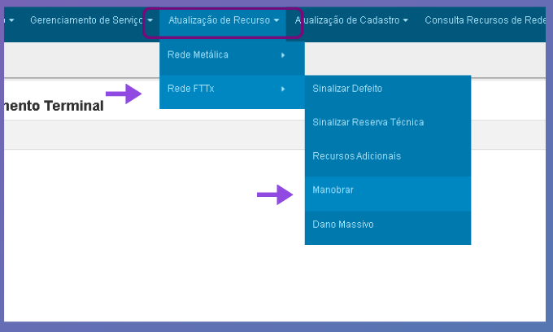

Como verificar alarme via Putty

Como converter Slot e Porta para Cabo e Primária via Sigres

Detalhamento do processo de manobra primária em Reparo
Atenção, não é permitido executar manobra fibra primária em Reparo. Porta OLT quando apresenta defeito ou falha de sincronismo, é condição de massiva, portanto, manobra não é a solução para um HGU único estar sem link/sincronismo.
Essa diretriz se aplica para a rede Vivo1 e rede Vivo2.
As facilidades que se encontram no campo PORTA FÍSICA da ordem de serviço devem ser respeitadas.
Exceção mapeada: Reparo pós ME (Mudança de Endereço) dentro de um período de 30 dias.
Duvidas consulte seu supervisor.